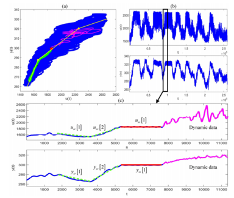
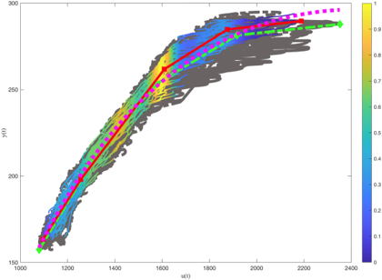

调节阀流量非线性特征估计与补偿
研究背景
调节阀等执行结构经常呈现明显的流量非线性特征，这会降低控制系统的整体性能。因此，有必要估计调节阀的非线性特征，对其进行在线补偿或离线维护，但难点在于如何以有说服力的方式获得准确的非线性特征估计结果。
研究目标
以历史运行数据为基础，估计调节阀的流量非线性特征，评价非线性特征对控制性能的影响程度，并给出与之相应的非线性特征补偿方案，用来提升设定值跟踪、外部扰动抑制等方面的控制性能。
主要思路
收集控制系统的设定值、控制量、被控量等相关变量的运行数据，挖掘适合建模的特殊数据段，例如幅值持续不变的稳态数据、幅值斜坡变化的稳态数据、适合线性模型的暂态数据等，提取调节阀的输入输出变量的关键样本点，从中获得调节阀非线性特征的估计结果，取其反函数对非线性特征进行补偿，并利用重构的控制系统，评价非线性特征对控制性能的影响程度，以及补偿方案的有效性。
应用案例
从燃煤发电机组的历史运行数据中，提取适合建模的特殊数据段（图1a），估计主汽调节阀的流量非线性特征曲线（图1b），通过主控指令的幅值补偿等方式，用来补偿非线性特征对一次调频控制性能的不利影响。


图1a 从历史数据中挖掘适合建模的特殊数据段
图1b 基于空间密度峰值曲线的非线性特征估计结果
技术细节
详见 “论文专著” 部分 —— 调节阀建模方面的代表性论文。